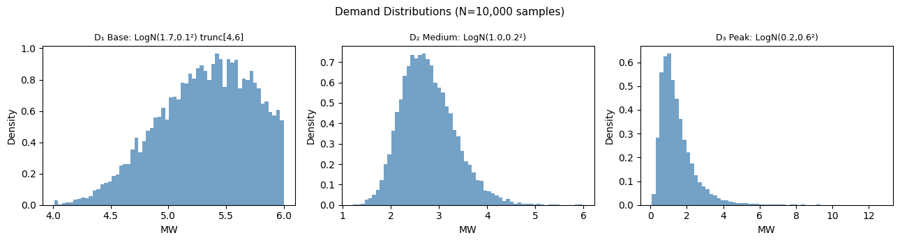
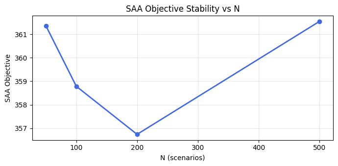
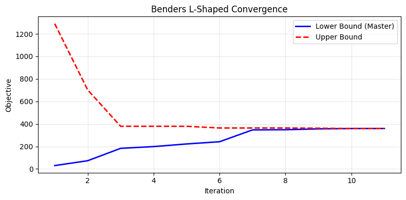
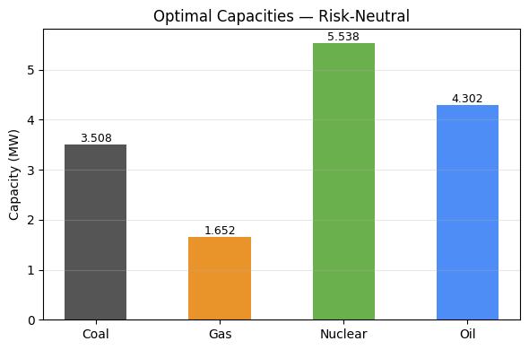
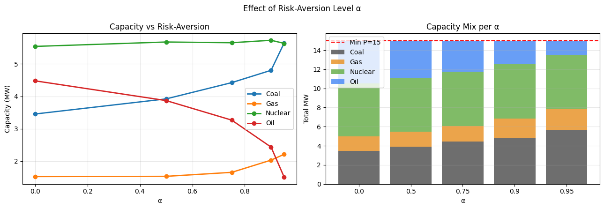

Power plants must be built before anyone knows how much electricity the region will want. Generation can wait; concrete cannot.
A planner selects capacity across four generator technologies: gas, coal, nuclear and oil. Each carries an annualised capital cost per megawatt-hour and a different marginal production cost. Nuclear is expensive to build and cheap to run; oil is the reverse.
Regional demand is described by a load duration curve, discretised into base, medium and peak blocks. The duration of each block is predictable, because it depends on working patterns and seasons. The height of each block is not: it responds to climate, to consumption behaviour and to structural shifts over the planning horizon.
The decision splits naturally in two. Capacity must be committed before demand realises. Dispatch, deciding which plant serves which block, can wait until it does.
This is the canonical structure where a deterministic model gives confidently wrong answers. Planning against average demand under-builds, because the cost of unserved energy is asymmetric: shedding load in a peak block is far more expensive than carrying idle capacity.
It also motivates the risk question. Expected cost is the right objective for an operator that will run this decision many times. A single regional system runs it once, and may care more about the worst outcomes than the average one.
The first stage chooses installed capacity for each technology subject to a minimum total capacity requirement. The recourse problem dispatches generation against realised demand, with load shedding available at a penalty. Because shedding is always feasible, the model has complete recourse and no feasibility cuts are ever required.
The expectation over demand is replaced by a sample average approximation. Three formulations were then compared: the extensive form solved directly, a Benders L-shaped decomposition, and a risk-averse variant.
Four generator technologies, three discretised load blocks, demand distributions inferred from historical data. The Benders implementation required two design choices to behave. Bounding the recourse variable below at zero gives a tight initial lower bound, since recourse cost cannot be negative. Bounding capacity above at twice maximum total demand prevents the master problem driving capacity to infinity to trivially satisfy negative-slope cuts, which was the original failure mode.





The extensive form and the Benders decomposition were cross-checked against each other, which is the discipline that catches a decomposition bug. A decomposition that converges quickly to the wrong answer looks exactly like one that works.
The subgradient used in each optimality cut is derived from the dual variables of the capacity constraints. Because the recourse problem is a minimisation with capacity entering as an upper bound, the correct subgradient is the negative of that dual: additional capacity can only reduce recourse cost.
The risk-averse formulation replaces the expectation with conditional value at risk at confidence level alpha, reformulated by the Rockafellar and Uryasev identity so that the whole problem stays a linear programme. Comparing capacity mixes across alpha shows the expected direction: risk aversion buys more capacity, and shifts the mix toward technologies that protect the tail.
Three formulations of one decision, each revealing something the others hide. The extensive form gives the benchmark, Benders gives the structure and the decomposition, and CVaR gives the risk position. The instructive part was debugging the decomposition rather than writing it.
Implemented in Python with CVXPY. Executed notebook available in the repository.